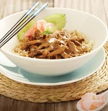
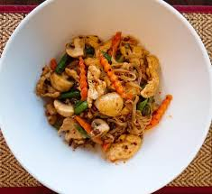

At Simply Asia we’re proud to offer a unique Thai dining experience, with food prepared by our chefs and a menu packed full of delicious dishes to satisfy a wide range of palates. And with more than 50 stores throughout the Western Cape, Eastern Cape, Gauteng and KwaZulu-Natal, our growing presence in Botswana and Zimbabwe, and award-winning cuisine, it’s no wonder we’re South Africa’s favourite Thai food restaurant.
HOW IT ALL BEGAN: THE SIMPLY ASIA STORY
Five years after his arrival in South Africa, Thai national Chai Lekcharoensuk walked into a Thai restaurant in Johannesburg to sample the local take on Thai cuisine. Disappointed with the meal, which hardly tasted like real Thai food, he became inspired to introduce South Africa to a more upmarket take on Thai dining, opening the first Wang Thai restaurant on Cape Town’s Foreshore in 1993.
Wang Thai’s combination of sophisticated elegance, our chefs and delicate spicy food was a hit with locals and tourists alike, and following the success of the Wang Thai chain, Mr Chai saw the opportunity to open a second, more mainstream Thai restaurant chain which would combine the authenticity and flavour of Wang Thai with the convenience and simplicity of a European noodle bar. Ten years later with this vision still in mind, he opened the first Simply Asia Thai Food & Noodle Bar – a fresh, tasty and affordable alternative for diners looking to broaden their horizons with more exotic and authentic cuisine.
Salads :
| TENDER DUCK OR CHICKEN IN PEANUT SAUCE Ba-Mee Ped Rue Gai Lon R82.00 |
RED SAUCE NOODLES
Kyew Teow Phad Nam Deang R78.00 |
THAI GREEN CURRY PESTO NOODLES
Kyew-Teow Geang Khew-Wan Gra-Prao Pesto R89.00 |
|---|---|---|
|  |  |  |
| Yellow noodles topped with roasted duck or chicken wokked in a peanut cream sauce. Served with pickled ginger, spring onions and cucumber. | Rice noodles wokked with mushrooms, green beans, carrots, fried garlic and roasted chilli paste, in a red stir-fry sauce. | Yellow noodles wokked with a fragrant green curry Thai pesto with tomato, broccoli and stir-fry sauce. Garnished with a sprig of mint. |